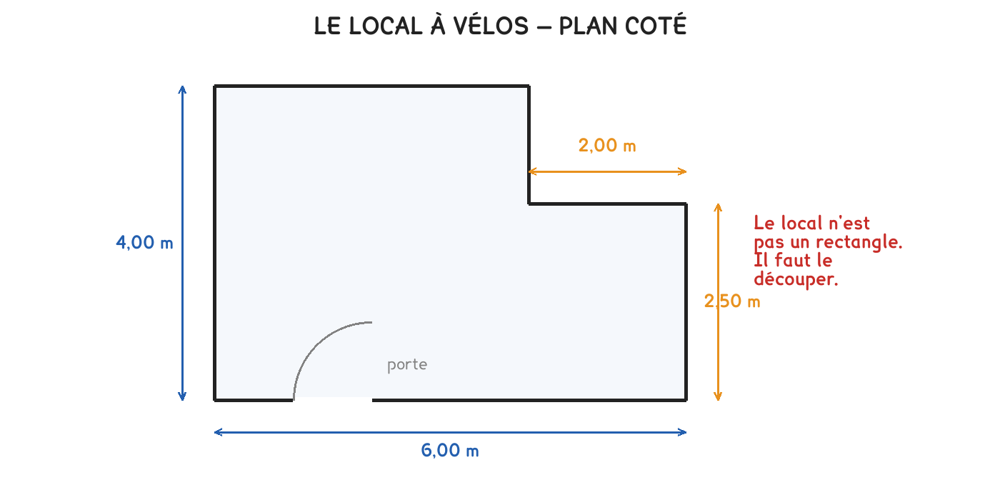

CAP Électricien · 1re année
Ça rentreou pas ?
Un local qui n'est pas un rectangle se découpe en deux. Ensuite, une seule question : cherche-t-on à couvrir ou à entourer ?
3 exercices · 6 items d'entraînement · 2 figures
Savoirs travaillés
Le local

Le local n’est pas un rectangle : il porte un décrochement. On le découpe en deux rectangles, et on additionne.

L’aire couvre, le périmètre entoure. Le sol se compte en mètres carrés, le grillage se commande en mètres. L’unité de la réponse dit lequel on a calculé.
Les deux calculs
Exercice · GE
L’aire du local
Le grand rectangle fait 4,00 m sur 4,00 m, le petit 2,00 m sur 2,50 m. Quelle est l’aire totale ?
Exercice · GE
Le grillage à commander
Quelle longueur de grillage faut-il pour faire le tour du local ?
N’additionner que quatre côtés. Le décrochement en ajoute deux : un local en L a six côtés, et le grillage se commande sur les six.
Exercice · CN
Combien de vélos
On compte 1,2 m² par vélo, circulation comprise. Combien de vélos tiennent dans ce local ?
Trois autres locaux
Série · GE
Série — l’aire de chacun
- A, 5,00 m × 3,00 m
- B, 6,00 m × 2,50 m
- C, carré de 4,00 m
Série · GE
Série — le périmètre des mêmes
- A, 5,00 m × 3,00 m
- B, 6,00 m × 2,50 m
- C, carré de 4,00 m
Ce qui reste du créneau
Même aire ne veut pas dire même périmètre. A et B couvrent la même surface, et pourtant B demande un mètre de grillage de plus.
Ce site rappelle la méthode. Aucun corrigé, rien n'est noté.